Práctica3: Señales Continuas 2MV1
Contents
Integrantes
- Cruz Crisóstomo Alejandra Lebafran
- Jiménez Rivera Emilio
- López Martínez Carlos Ian
- Ortiz Vázquez Piero Ludwig
- Rodríguez Hernández Eduardo
Objetivo
Con esta práctica buscamos obtener y reforzar conocimientos previamente adquiridos, esto por medio de la elaboración de una página Web utilizando la plataforma de MATLAB, el cual nos proporcionará un mejor dominio de los temas y mayor agilidad para el uso de la plataforma.
1.11 MATLAB: Trabajar con funciones
Trabajar con funciones es fundamental para las aplicaciones de señales y sistemas. MATLAB proporciona varios métodos para definir y evaluar funciones. La comprensión y el uso competente de estos métodos son, por tanto, necesarios y beneficiosos.
1.11-1 Funciones Anonimas
Muchas funciones simples se representan más convenientemente mediante el uso anónimo de MATLAB. Una función anónima proporciona una representación simbólica de una función definida en términos de operadores u otras funciones anónimas de MATLAB. Por ejemplo, considere definiendo la sinusoide amortiguada exponencialmente 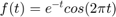 .
f = @(t) exp(-t).*cos(2*pi*t);
En este contexto, el símbolo @ identifica la expresión como una función anónima, que se asigna un nombre de f. Los paréntesis que siguen al símbolo @ se utilizan para identificar la variable independiente (argumentos de entrada), que en este caso es la única variable de tiempo t. Argumentos de entrada, como t , son locales de la función anónima y no están relacionados con ninguna variable del espacio de trabajo con los mismos nombres.
Una vez definida, f(t) se puede evaluar simplemente pasando los valores de entrada de interés. Por ejemplo,
t = 0; f(t)
ans =
1
evalúa f(t) en t = 0 , confirmando el resultado esperado de la unidad. El mismo resultado se obtiene pasando t = 0 directamente.
f(0)
ans =
1
Las entradas vectoriales permiten la evaluación de múltiples valores simultáneamente. Considere la tarea de trazar f(t) en el intervalo (−2 ≤ t ≤ 2) . El comportamiento de la función bruta es claro: f(t) debería oscilar cuatro veces con una envolvente en decadencia. Dado que los bocetos precisos a mano son engorrosos, los gráficos generados por MATLAB son una alternativa atractiva. Como ilustra el siguiente ejemplo, el cuidado es que se deben tomar medidas para garantizar resultados confiables.
Supongamos que se elige el vector t para incluir solo los números enteros contenidos en (−2 ≤ t ≤ 2) , es decir, [-2,-1, 0, 1, 2] .
t = (-2:2);
Esta entrada vectorial se evalúa para formar una salida vectorial.
f(t)
ans =
7.3891 2.7183 1.0000 0.3679 0.1353
El comando plot grafica el resultado, que se muestra en la figura 1.46.
Las líneas de cuadrícula, agregadas mediante el comando de cuadrícula, ayudan a identificar las características. Desafortunadamente, el gráfico no ilustra el comportamiento oscilatorio esperado. Se requieren más puntos para adecuadamente representar f(t).
La pregunta entonces es ¿cuántos puntos son suficientes? Si se eligen muy pocos puntos, la información está perdida. Si se eligen demasiados puntos, se desperdicia memoria y tiempo. Se necesita un equilibrio. Para funciones oscilatorias, normalmente es adecuado trazar de 20 a 200 puntos por oscilación. Para el presente en este caso, se elige t para dar 100 puntos por oscilación.
t = (-2:2);
Nuevamente, la función se evalúa y traza.
plot(t,f(t)); xlabel('t'); ylabel('f(t)'); grid;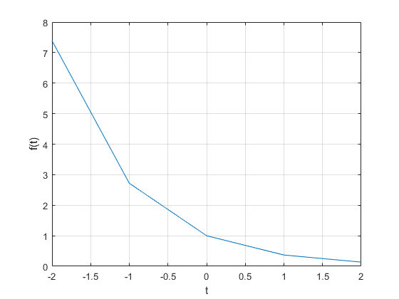
Figura 1.46 para t = (-2:2).
t = (-2:0.01:2); plot(t,f(t)); xlabel('t'); ylabel('f(t)'); grid;

Figura 1.47 para t = (-2:0.01:2).
El resultado, que se muestra en la figura 1.47, es una descripción precisa de f(t).
1.11-2 Operadores relacionales y la función de paso unitario
La función escalón unitario u(t) surge naturalmente en muchas situaciones prácticas. Por ejemplo, un escalón unitario puede modelar el acto de encender un sistema. Con la ayuda de operadores relacionales, funciones anónimas puede representar la función del escalón unitario.
En MATLAB, un operador relacional compara dos elementos. Si la comparación es cierta, una verdad lógica (1) se devuelve. Si la comparación es falsa, se devuelve un falso lógico (0). A veces llamado indicador de funciones, los operadores relacionales indican si una condición es verdadera. Seis operadores relacionales son disponibles: <, >, <=, >=, == y ~=.
La función del escalón unitario se define fácilmente usando el operador relacional >=.
u = @(t) 1.0.*(t>=0);
Cualquier función con una discontinuidad de salto, como el paso unitario, es difícil de trazar. Considere la posibilidad de trazar u(t) usando t = (-2:2).
t = (-2:2); plot(t,u(t)); xlabel('t'); ylabel('u(t)');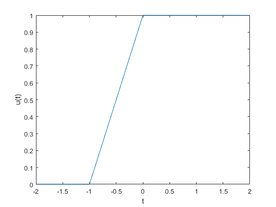
Figura 1.48 u(t) para t = (-2:2).
Dos problemas importantes son evidentes en el gráfico resultante, que se muestra en la figura 1.48. Primero, MATLAB escala automáticamente los ejes del gráfico para vincular estrechamente los datos. En este caso, normalmente la característica deseable oscurece la mayor parte de la trama. En segundo lugar, MATLAB conecta los datos del trazado con líneas, haciendo que una verdadera discontinuidad de salto sea difícil de lograr. La resolución gruesa del vector t enfatiza el efecto al mostrar una línea inclinada errónea entre t = −1 y t = 0.
El primer problema se corrige ampliando verticalmente el cuadro delimitador con el eje dominio. El segundo problema se reduce, pero no se elimina, sumando puntos al vector t.
t = (-2:0.01:2); plot(t,u(t)); xlabel('t'); ylabel('u(t)'); axis([-2 2 -0.1 1.1]);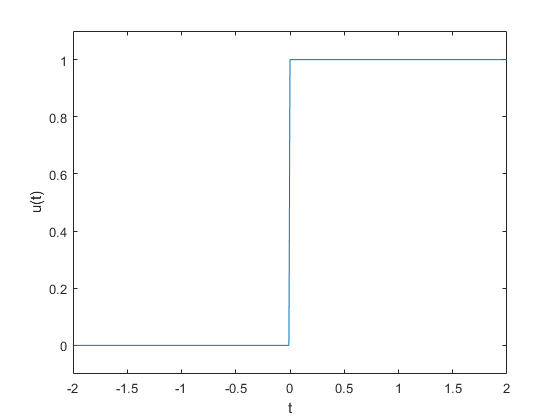
Figura 1.49 u(t) para t = (-2:0.01:2) con modificación axis.
El argumento vectorial de cuatro elementos del eje especifica el eje x mínimo, el eje x máximo y el eje y mínimo, y máximo del eje y, respectivamente. Los resultados mejorados se muestran en la figura 1.49.
Los operadores relacionales se pueden combinar usando AND lógico, OR lógico y negación lógica: &, | y ~, respectivamente. Por ejemplo, (t>0)&(t<1) y ~((t<=0)|(t>=1)) prueban si 0 < t < 1. Para demostrarlo, considere definir y trazar el escalón unitario p(t) = u(t) − u(t − 1), como se muestra en la Figura 1.50:
p = @(t) 1.0.*((t>=0)&(t<1)); t = (-1:0.01:2); plot(t,p(t)); xlabel('t'); ylabel('p(t) = u(t)-u(t-1)'); axis([-1 2 -.1 1.1]);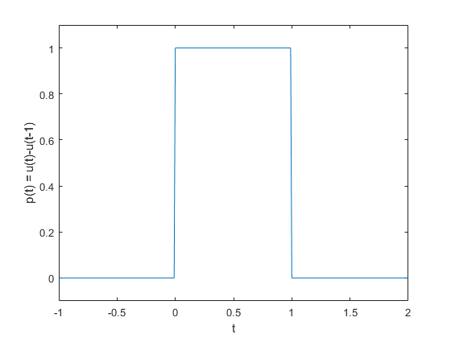
Figura 1.50 p(t) = u(t) - u(t-1) para (-1 ≤ t ≤ 2).
Dado que las funciones anónimas se pueden construir utilizando otras funciones anónimas, podríamos utilizar nuestra función anónima de paso unitario previamente definida para definir p(t) como p = @(t) u(t)-u(t-1).
Para operandos escalares, MATLAB también admite dos construcciones lógicas de cortocircuito. A el AND lógico de cortocircuito se realiza mediante &&, y el OR lógico de cortocircuito se realiza mediante. Los operadores lógicos de cortocircuito suelen ser más eficientes que los operadores lógicos tradicionales porque prueban la segunda parte de la expresión sólo cuando es necesario. Es decir, cuando al escalar la expresión A se encuentra falsa en (A&&B), la expresión escalar B no se evalúa, ya que un resultado falso ya está garantizado. De manera similar, la expresión escalar B no se evalúa cuando la expresión escalar A es encontrado verdadero en (A||B), ya que ya se garantiza un resultado verdadero.
1.11-3 Visualización de operaciones en la variable independiente
Comúnmente se encuentran dos operaciones sobre la variable independiente de una función: desplazamiento y escalada. Las funciones anónimas son muy adecuadas para investigar ambas operaciones.
Considere 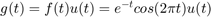, una versión causal de f(t). MATLAB fácilmente multiplica funciones anónimas. Por lo tanto, creamos g(t) multiplicando nuestras funciones anónimas para f(t) y u(t).
g = @(t) f(t).*u(t);
Una operación combinada de cambio y escala está representada por g(at + b), donde a y b son constantes reales arbitrarias. Como ejemplo, considere graficar g(2t +1) sobre (−2 ≤ t ≤ 2) . Con a = 2, la función se comprime por un factor de 2, lo que da como resultado el doble de oscilaciones por unidad t. Añadiendo la condición b > 0 desplaza la forma de onda hacia la izquierda. Dada la función anónima g, una gráfica precisa es casi trivial de obtener.
t = (-2:0.01:2); plot(t,g(2*t+1)); xlabel('t'); ylabel('g(2t+1)'); grid;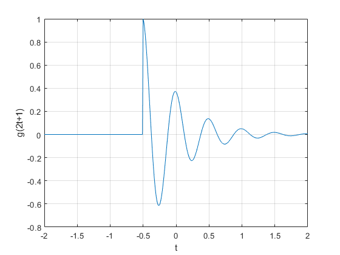
Figura 1.51 g(2t +1) para (−2 ≤ t ≤ 2).
La Figura 1.51 confirma la compresión esperada de la forma de onda y el desplazamiento hacia la izquierda. Como comprobación final, tenga en cuenta esa función g(·) se activa cuando el argumento de entrada es cero. Por lo tanto, g(2t + 1) debería activarse cuando 2t +1 = 0 o en t = −0.5, hecho confirmado nuevamente por la figura 1.51
t = (-2:0.01:2); plot(t,g(-t+1)); xlabel('t'); ylabel('g(-t+1)'); grid;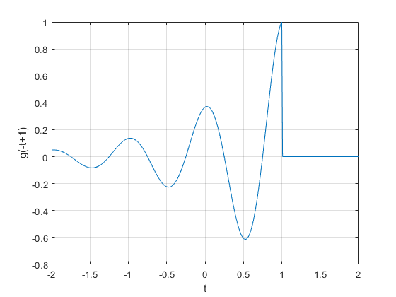
Figura 1.52 g(-t +1) para (−2 ≤ t ≤ 2).
t = (-2:0.01:2); plot(t,g(2*t+1)+g(-t+1)); xlabel('t'); ylabel('g(2t+1)+g(-t+1)'); grid;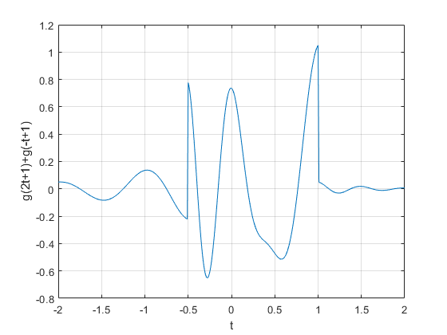
Figura 1.53 h(t) = g(2t+1) + g(-t+1) para (−2 ≤ t ≤ 2).
A continuación, considere graficar g(−t + 1) sobre (−2 ≤ t ≤ 2). Como a < 0, la forma de onda será reflejado. Agregar la condición b > 0 que desplaza la forma de onda final hacia la derecha.
plot(t,g(-t+1)); xlabel('t'); ylabel('g(-t+1)'); grid;
La figura 1.52 confirma tanto la reflexión como el desplazamiento a la derecha.
Hasta este punto, las Figuras 1.51 y 1.52 podrían esbozarse razonablemente a mano. Considere la posibilidad de trazar la función más complicada h(t) = g(2t + 1) + g(−t + 1) sobre (−2 ≤ t ≤ 2) (figura 1.53); un boceto a mano preciso sería bastante difícil. Con MATLAB, el trabajo es mucho menos engorroso.
plot(t,g(2*t+1)+g(-t+1)); xlabel('t'); ylabel('h(t)'); grid;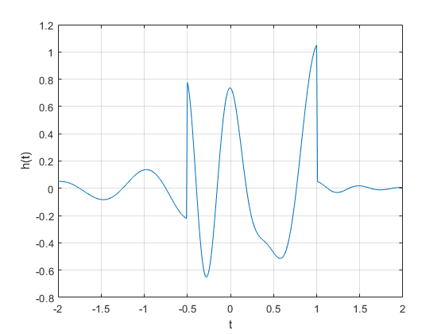
1.11-4 Integración numérica y estimación de la energía de una señal.
Las señales interesantes suelen tener representaciones matemáticas no triviales. Computar la energía de la señal, que implica integrar el cuadrado de estas expresiones, puede ser una tarea desalentadora. Afortunadamente, muchas integrales difíciles se pueden estimar con precisión mediante técnicas de integración numérica.
Incluso si la integración parece simple, la integración numérica proporciona una buena manera de verificar resultados analíticos.
Para empezar, considere la señal simple 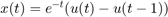 La energía de x(t) se expresa como 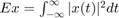 La integración produce 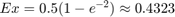. La energía de la integral también se puede evaluar numéricamente. La figura 1.27 ayuda a ilustrar el método simple de aproximación rectangular: evalúe el integrando en puntos separados uniformemente por 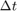, multiplique cada uno por para calcular las áreas del rectángulo y luego sumar todos los rectángulos. Primero, creamos la función x(t).
x = @(t) exp(-t).*((t>=0)&(t<1));
Con 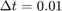, se crea un vector de tiempo adecuado.
t = (0:0.01:1);
El resultado final se calcula utilizando el comando suma.
E_x = sum(x(t).*x(t)*0.01)
E_x =
0.4367
El resultado no es perfecto, pero con un error relativo del 1% está cerca. Reduciendo , la aproximación es mejorado. Por ejemplo, t = 0.001 produce E_x = 0.4328, o un error relativo del 0.1%.
Aunque es fácil de visualizar, la aproximación rectangular no es la mejor integración numérica técnica. La función quad de MATLAB implementa una mejor técnica de integración numérica llamada cuadratura de Simpson adaptativa recursiva. Para operar, quad requiere una función que describa el integrando, el límite inferior de integración y el límite superior de integración. Observe que no necesita ser especificado
Para utilizar quad para estimar Ex, primero se debe describir el integrando.
x_squared = @(t) x(t).*x(t);
La estimación de Ex sigue inmediatamente.
E_x = quad(x_squared,0,1)
E_x =
0.4323
En este caso, el error relativo es de −0.0026%.
Se pueden utilizar las mismas técnicas para estimar la energía de señales más complejas. Considerar g(t), definido anteriormente. La energía se expresa como 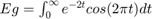. Una solución de forma cerrada existe, pero requiere algo de esfuerzo. MATLAB proporciona una respuesta más rápidamente.
g_squared = @(t) g(t).*g(t);
Aunque el límite superior de integración es infinito, la envolvente que decae exponencialmente asegura g(t) es efectivamente cero mucho antes de t = 100. Por lo tanto, se utiliza un límite superior de t = 100 junto con 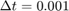.
t = (0:0.001:100); E_g = sum(g_squared(t)*0.001)
E_g =
0.2567
Se obtiene una aproximación ligeramente mejor con la función quad.
E_g = quad(g_squared,0,100)
E_g =
0.2562
Problema 1.2-2
1.2-2 Para la señal x(t) mostrada a continuación bosqueje lo siguiente:
- a) x(t-4)
- b) x(t/1.5)
- c) x(-t)
- d) x(2t-4)
- e) x(2-t)
t = (-5:0.01:3); x1 = @(t) -t.*((t>=-4)&(t<=0)); x2 = @(t) t.*((t>=0)&(t<=2)); x = @(t) x1(t) + x2(t); figure() plot(t,x(t),LineWidth=1.5); grid on; ax = gca; ax.XAxisLocation = 'origin'; ax.YAxisLocation = 'origin'; ax.Box = 'off'; title('x(t)')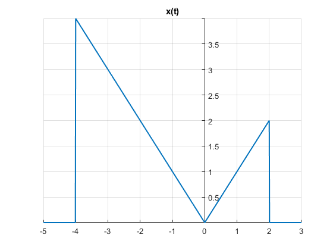
%Respuesta figure(); subplot(3,2,1) t1 = (-1:0.01:7); plot(t1,x(t1-4),LineWidth=1.5); grid on; ax = gca; ax.XAxisLocation = 'origin'; ax.YAxisLocation = 'origin'; ax.Box = "off"; axis([-1 7 0 4]); title('a) x(t-4)'); subplot(3,2,2); t2 = (-7:0.01:4); plot(t2,x(t2/1.5),LineWidth=1.5); grid on; ax = gca; ax.XAxisLocation = 'origin'; ax.YAxisLocation = 'origin'; ax.Box = "off"; axis([-7 4 0 4]); title('b) x(t/1.5)'); subplot(3,2,3); t3 = (-3:0.01:5); plot(t3,x(-t3),LineWidth=1.5); grid on; ax = gca; ax.XAxisLocation = 'origin'; ax.YAxisLocation = 'origin'; ax.Box = "off"; axis([-3 5 0 4]); title('c) x(-t)') subplot(3,2,4); t4 = (-1:0.01:4); plot(t4,x((2.*t4)-4),LineWidth=1.5); grid on; ax = gca; ax.XAxisLocation = 'origin'; ax.YAxisLocation = 'origin'; ax.Box = "off"; axis([-1 4 0 4]); title('d) x(2t-4)') subplot(3,2,5); t5 = (-1:0.01:7); plot(t5,x(2-t5),LineWidth=1.5); grid on; ax = gca; ax.XAxisLocation = 'origin'; ax.YAxisLocation = 'origin'; ax.Box = "off"; axis([-1 7 0 4]); title('e) x(2-t)')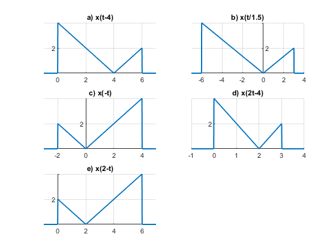
Problema 1.11-1
1.11-1 Proporcionar código MATLAB y resultados que tracen la porción impar xe(t) de la función 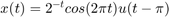 en un intervalo de longitud adecuada utilizando un número adecuado de puntos.
figure(); t = (0:0.1:10); u = @(t) 1.0.*(t>=0); x = @(t) ((2.^(-t)).*cos(4*pi*t)).*u(t-pi); plot(t,x(t),'--r'); xlabel('t'); ylabel('x(t)'); grid on; ax = gca; ax.XAxisLocation = 'origin'; ax.YAxisLocation = 'origin'; ax.Box = 'off'; title('Gráfica de problema 1.11-1');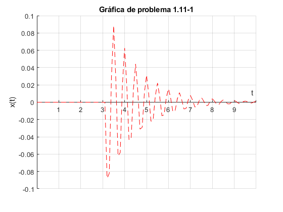